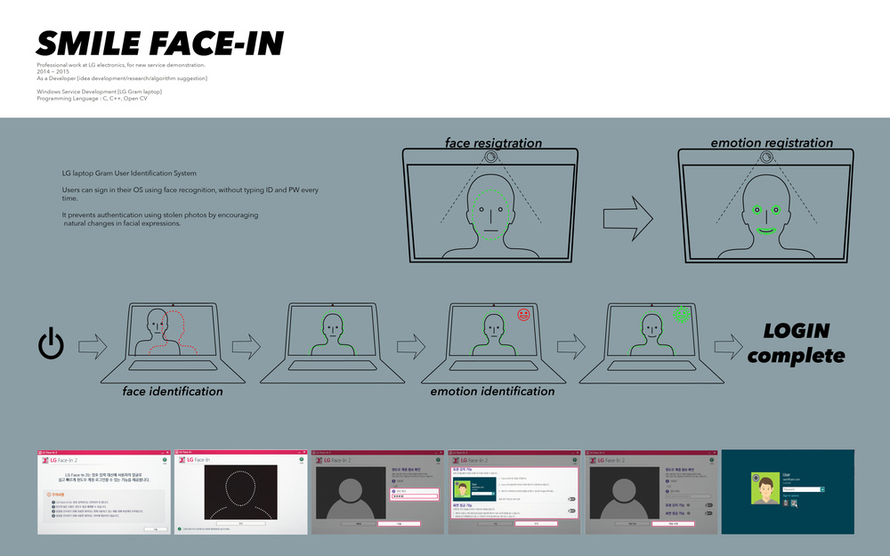

| ︎ | ︎ | ︎ |

LG laptop Gram User Identification System
Users can sign in their OS using face recognition, without typing ID and PW
every time. It prevents authentication using stolen photos by encouraging
natural changes in facial expressions.
C, C++, LG face recognition ML engine
Windows Service Developmen
Implemented for LG Gram laptop
Ideation, Research, Algorithm
Professional work at LG electronics
Seoul, 2014-2015